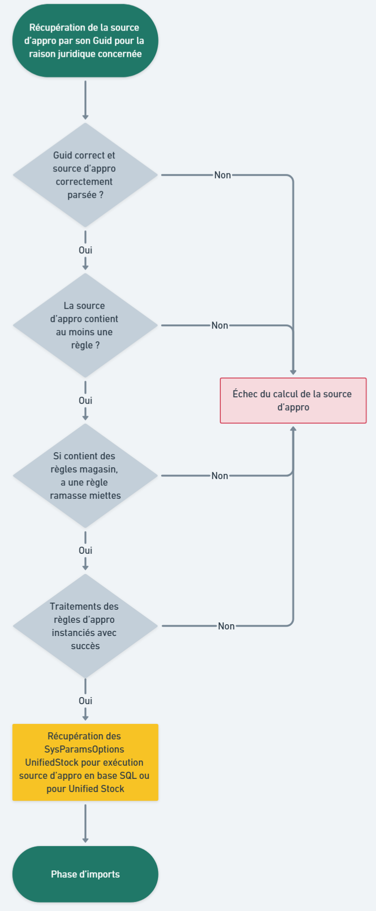
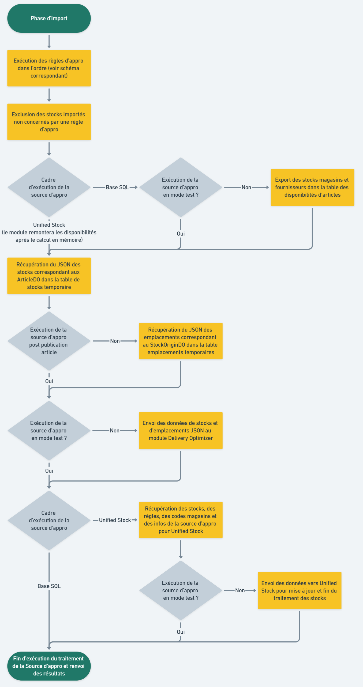

Exécution d'une Source d'Approvisionnement
Généralités
Déclenchement du calcul d'une source d'approvisionnement
Le calcul d'une source d'approvisionnement peut être déclenchée de plusieurs façons :
- En réponse à un évènement (après un import de stocks, la modification d'articles, la modification des sources/règles/traitements d'approvisionnement, etc.)
- À heure fixe (tous les jours à 6h du matin par exemple)
- À intervalle régulier (toutes les deux heures par exemple)
- Manuellement
N'hésitez pas à vous rapprocher d'Altazion afin de déterminer ensemble de la meilleure stratégie à adopter pour le déclenchement des sources d'approvisionnement.
Durée d'exécution du calcul
La durée du calcul dépend grandement des facteurs suivants :
- La taille de votre catalogue d'articles.
- Le nombre d'origines de stocks.
- La quantité et la complexité de vos règles.
- Si la source d'approvisionnement est exécutée en base de données ou pour Unified Stock (Unified Stock est généralement plus rapide et impact moins la base de données principale).
Ainsi le temps d'exécution peut varier entre quelques secondes et plusieurs minutes. Bien que l'exécution des sources d'appro soit conçue pour limiter un maximum son impact sur le reste de votre système d'information, Altazion recommande d'exécuter les calculs complexes à des heures où le trafic sur votre base est faible (la nuit le plus souvent).
Traçabilité
Journalisation et remontée des traces
Le processus d'exécution d'une source d'approvisionnement est documenté par un système complet de traces vous permettant ainsi de garantir le bon fonctionnement de chacune des étapes. Ces traces sont affichées dans les journaux de l'application et également remontées dans votre système de centralisation des logs (datadog par exemple) dans le service "OMS" et la Zone "SourcesAppro".
Traçabilité des opérations sur les stocks
Chaque source d'approvisionnement dispose d'une table temporaire de stocks qu'il est possible de consulter afin d'obtenir, pour chaque stock (combinaison article, origine de stock), des informations sur :
- Quelle règle affecte le stock
- Si le stock possède une quantité minimum et/ou maximum associée
- Quel traitement a fixé une éventuelle quantité minimum/maximum (dans le champ "traitement")
- Si le stock est ignoré
Quel traitement a rendu le stock ignoré (dans le champ "traitement")
Le champ traitement affiche en priorité le traitement ayant ignoré le stock. S'il n'y en a pas il affichera le dernier traitement qui a affecté les quantités. Si aucun traitement n'affecte la ligne de stock, ce champ sera null.
Processus de calcul d'une source d'approvisionnement
L'exécution d'une source d'approvisionnement se divise en trois étapes principales.
Initialisation de la source d'approvisionnement
Cette étape vérifie la configuration de la source d'approvisionnement, des règles et de leurs traitements.

Import des données nécessaires au calcul
Cette phase récupère et prépare les origines de stocks ainsi que leurs stocks pour le calcul des règles. Attention : Seul les stocks jugés valides sont importés. Pour cela, ils doivent satisfaire les conditions suivantes :
- Disposer d'une quantité disponible supérieur à 0.
- Être disponible dans l'emplacement
- Être un stock d'article normal.
- Ne pas être issu d'un article supprimé, non validé ou non publié

Calcul des disponibilités, enregistrement/export des résultats.
Cette dernière étape exécute les traitements et critères de disponibilités des règles de la source. Une fois tous les calculs terminés, les résultats sont enregistrés et exportés vers Delivery Optimizer et Unified Stock (si les modules sont actifs).
